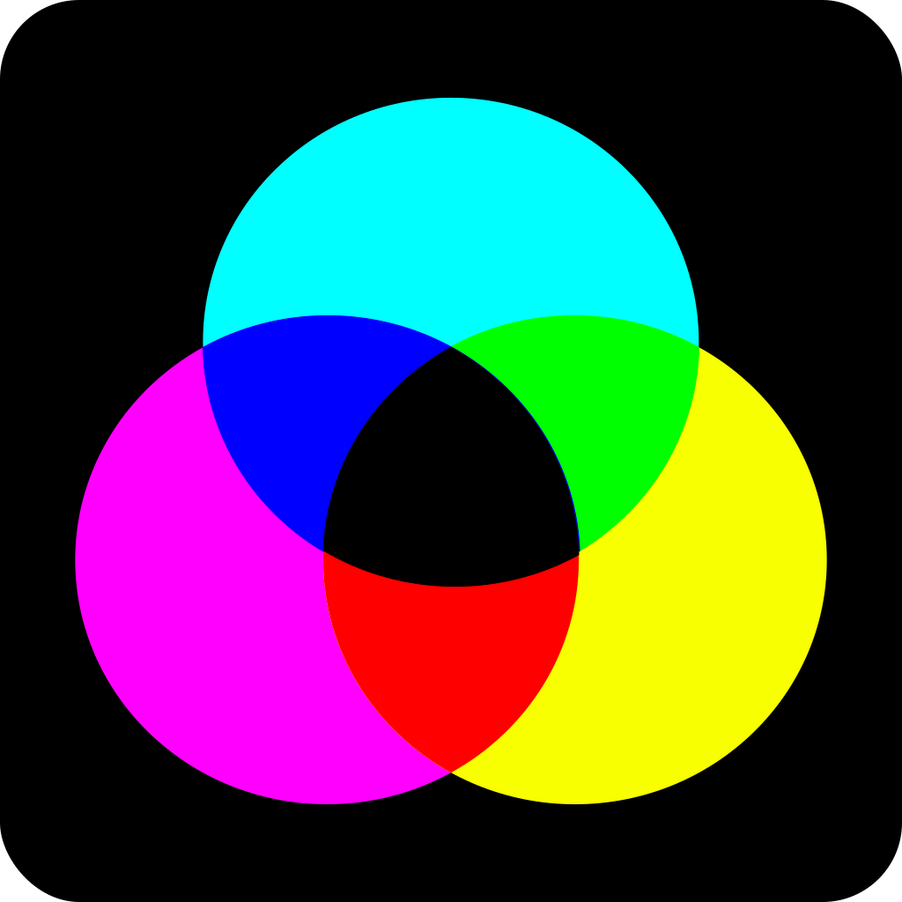
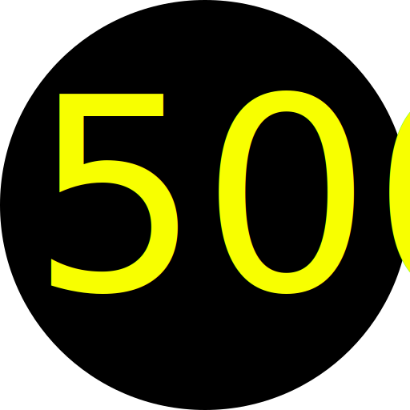

CMY is short for Cyan, Magenta and Yellow. These are the three basic colors used in
modern day color printing. Mixing these colors is the objective of the game.

For the true die-hards, we also have a few achievements to obtain. Beware: all of
them play hard to get.

Questions? You can reach us at moc.sixiq@ymc or on twitter @qixissoftware